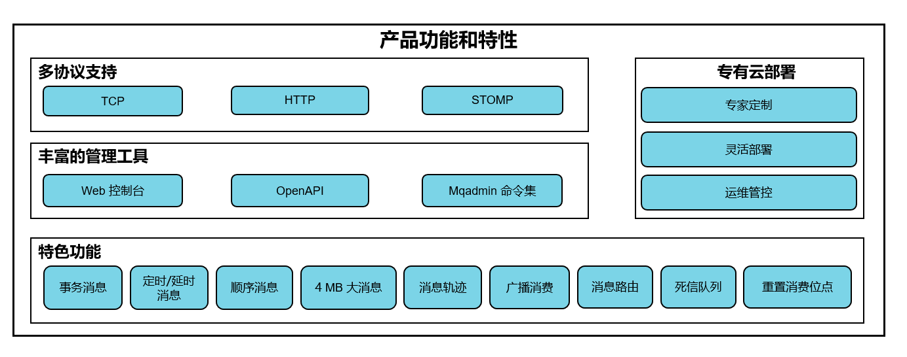
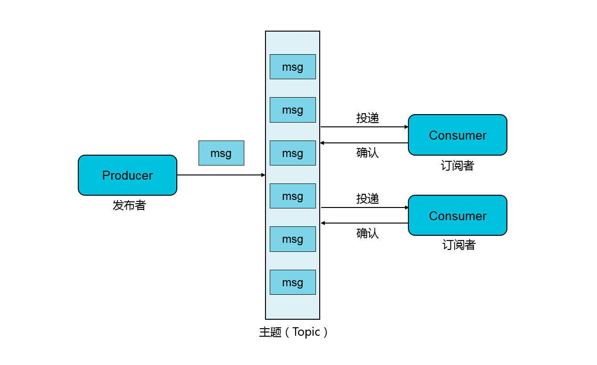

Rocket02
消息队列RocketMQ
网址：https://help.aliyun.com/document_detail/29532.html?spm=a2c4g.11186623.6.542.79f9793fBwdeC7
本文章是学习了阿里云大佬们自己编写的资料，进行自己总结的，消息对接是阿里集团自主研发的专业消息中间件，提供了消息的订阅和发布、消息轨迹查询以及定时(延迟)消息、资源统计、监控报警等一系列的消息云服务，同时具备海量消息堆积、高吞吐、可靠重试等互联网应用所需的特性，是阿里巴巴双11使用的核心产品。
RocketMQ产品功能简洁
当你想熟悉一个新框架应用时，你最好是先了解下这个产品有哪些功能，改产品是如何进行工作的，才能更加彻底的深入学习
产品功能结构图

消息接收模型
RocketMQ支持消息“发布、订阅模式”，生产者将一条信息发送到服务器的某一个主题（Topic）上，多个消息接收方（消费者）订阅这个主题以及接收消息，以下是主题（Topic）。

名词解释
- Topic：消息主题，一级消息类型，通过topic对消息进行分类
- Tag: 消息标签，二级消息类型，用来进一步区分topic下的消息分类
- Message: 作为承载消息的载体。
- Message ID： 消息的全局唯一标识，有消息队列MQ系统自动生产的，唯一标识某条信息。
- Message Key: 由生产者主动生产，作为业务的唯一标识。
- producer: 消息生产者，负责生产和发送信息。
- producer实例： Producer 的一个对象实例，不同的 Producer 实例可以运行在不同进程内或者不同机器上。Producer 实例线程安全，可在同一进程内多线程之间共享
- Consumer：消息消费者，也称为消息订阅者，负责接收并消费消息
- Consumer 实例： Consumer 的一个对象实例，不同的 Consumer 实例可以运行在不同进程内或者不同机器上。一个 Consumer 实例内配置线程池消费消息
- Group
一类 Producer 或 Consumer，这类 Producer 或 Consumer 通常生产或消费同一类消息，且消息发布或订阅的逻辑一致。
Group ID
Group 的标识。Exactly-Once 投递语义
Exactly-Once 投递语义是指发送到消息系统的消息只能被消费端处理且仅处理一次，即使生产端重试消息发送导致某消息重复投递，该消息也在消费端也只被消费一次。详情请见Exactly-Once 投递语义。集群消费
一个 Group ID 所标识的所有 Consumer 平均分摊消费消息。例如某个 Topic 有 9 条消息，一个 Group ID 有 3 个 Consumer 实例，那么在集群消费模式下每个实例平均分摊，只消费其中的 3 条消息。详情请见集群消费和广播消费。广播消费
一个 Group ID 所标识的所有 Consumer 都会各自消费某条消息一次。例如某个 Topic 有 9 条消息，一个 Group ID 有 3 个 Consumer 实例，那么在广播消费模式下每个实例都会各自消费 9 条消息。详情请见集群消费和广播消费。定时消息
Producer 将消息发送到消息队列 RocketMQ 服务端，但并不期望这条消息立马投递，而是推迟到在当前时间点之后的某一个时间投递到 Consumer 进行消费，该消息即定时消息。详情请见定时和延时消息。延时消息
Producer 将消息发送到消息队列 RocketMQ 服务端，但并不期望这条消息立马投递，而是延迟一定时间后才投递到 Consumer 进行消费，该消息即延时消息。详情请见定时和延时消息。事务消息
消息队列 RocketMQ 提供类似 X/Open XA 的分布事务功能，通过消息队列 RocketMQ 的事务消息能达到分布式事务的最终一致。详情请见事务消息。顺序消息
消息队列 RocketMQ 提供的一种按照顺序进行发布和消费的消息类型, 分为全局顺序消息和分区顺序消息。详情请见顺序消息。全局顺序消息
对于指定的一个 Topic，所有消息按照严格的先入先出（FIFO）的顺序进行发布和消费。详情请见顺序消息。分区顺序消息
对于指定的一个 Topic，所有消息根据 sharding key 进行区块分区。同一个分区内的消息按照严格的 FIFO 顺序进行发布和消费。Sharding key 是顺序消息中用来区分不同分区的关键字段，和普通消息的 key 是完全不同的概念。详情请见顺序消息。消息堆积
Producer 已经将消息发送到消息队列 RocketMQ 的服务端，但由于 Consumer 消费能力有限，未能在短时间内将所有消息正确消费掉，此时在消息队列 RocketMQ 的服务端保存着未被消费的消息，该状态即消息堆积。消息过滤
消费者可以根据消息标签（Tag）对消息进行过滤，确保消费者最终只接收被过滤后的消息类型。消息过滤在消息队列 RocketMQ 的服务端完成。详情请见消息过滤。消息轨迹
在一条消息从生产者发出到订阅者消费处理过程中，由各个相关节点的时间、地点等数据汇聚而成的完整链路信息。通过消息轨迹，您能清晰定位消息从生产者发出，经由消息队列 RocketMQ 服务端，投递给消息消费者的完整链路，方便定位排查问题。详情请见消息轨迹简介。重置消费位点
以时间轴为坐标，在消息持久化存储的时间范围内（默认 3 天），重新设置消息消费者对其订阅 Topic 的消费进度，设置完成后订阅者将接收设定时间点之后由消息生产者发送到消息队列 RocketMQ 服务端的消息。详情请见重置消费位点。死信队列
死信队列用于处理无法被正常消费的消息。当一条消息初次消费失败，消息队列 RocketMQ 会自动进行消息重试；达到最大重试次数后，若消费依然失败，则表明消费者在正常情况下无法正确地消费该消息，此时，消息队列 RocketMQ 不会立刻将消息丢弃，而是将其发送到该消费者对应的特殊队列中。
消息队列 RocketMQ 将这种正常情况下无法被消费的消息称为死信消息（Dead-Letter Message），将存储死信消息的特殊队列称为死信队列（Dead-Letter Queue）。
详情请见死信队列。
- 消息路由
消息路由常用于不同地域之间的消息同步，保证地域之间的数据一致性。消息队列 RocketMQ 的全球消息路由功能依托阿里云优质基础设施实现的高速通道专线，可以高效地实现国内外不同地域之间的消息同步复制。详情请见全球消息路由。
总结：
学习一个新的产品，概念是极其的重要，所以记住概念是有必要的。
原文作者: John Doe
原文链接: https://debug20121104.github.io/debug.github.io/2019/05/30/Rocket02/
版权声明: 转载请注明出处(必须保留作者署名及链接)